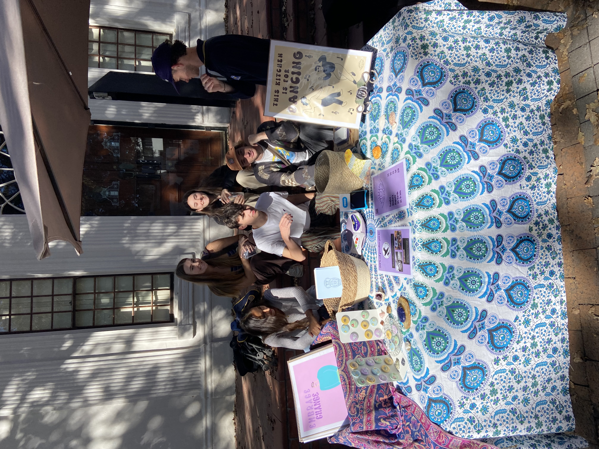

Lilac and Lunar embodies a whimsical and artistic spirit, blending the enchanting allure of celestial themes with a touch of vintage charm. We are dedicated to
crafting unique, high-quality art prints as well as funky arts & crafts that evoke a sense of wonder and imagination. Drawing inspiration from Alice in Wonderland,
Ancient Greek and Egyption mythology, and the serene beauty of lunar landscapes (the stars). We aim to create pieces that not only beautify spaces but also inspire
a deeper appreciation for art and creativity. Committed to ethical practices and community involvement, Lilac and Lunar is not just a store but a celebration of
artistic expression and mindful living. If you're lucky, you might just catch us at the sunday market!

We are a social enterprise with the main goal of spreading Peace, Love and Positivity through art. A social enterprise is defined by wikipedia as an organisation that
applies strategies to maximise improvements in financial, social and environmental well-being. This concept found us through a book called “Paying it forward: How to
be a social entrepreneur” where the author Josh Littlejohn claimed that if one in five businesses became a social enterprise and donated 20% of profits to charity we
would be able to eradicate poverty and homelessness. Even though we are a small business, we firmly believe in the butterfly effect. Every little bit counts in making
a positive change in the world :)